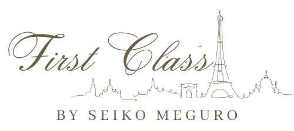
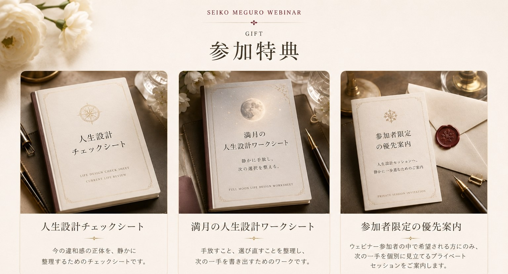
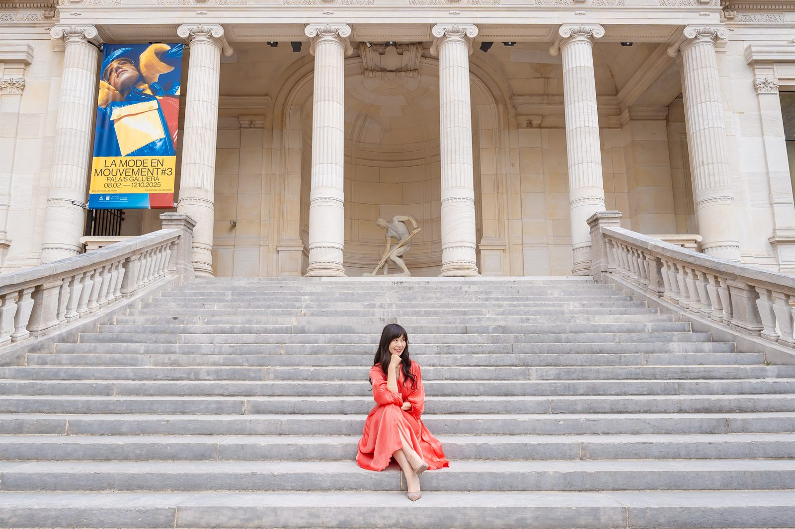

今の違和感が、疲れなのか転機なのかを見分ける視点
なんとなく不安、満たされない、先が見えない。その感覚を整理するための見立て方を持ち帰れます。

無料で申し込む無料オンラインウェビナー
頑張ってきた人生の、その先へ。
人生の転機に、次の一手を整える人生設計ウェビナー
仕事も、家庭も、役割も、きちんと向き合ってきた。けれど心の奥で「この先を、このまま延長していいのだろうか」と感じている方へ。
FOR YOU
「悩んでいる」というより、次のステージへ進む準備が始まっている方に向けた時間です。
QUIET SIGN
大きな問題があるわけではない。むしろ、これまで真面目に積み重ねてきたからこそ、表面上はきちんと整って見える。
けれど、自分だけが知っている静かな違和感がある。本当はもっと自由に選びたい。本当の望みに沿って、人生をもう一度動かしたい。
REFRAME
今必要なのは、根性論でも、気合いでもありません。現在地を見立て、本質と流れを読み、どの順番で整えるかを決めること。
このウェビナーでは、違和感を「停滞」ではなく「次のステージの合図」として扱います。
YOU WILL GET
抽象論で終わらせず、ウェビナー後に「何を見直せばいいか」が残る設計です。
なんとなく不安、満たされない、先が見えない。その感覚を整理するための見立て方を持ち帰れます。
仕事、家族、自分の望み、身体、行動。どこから整えると動きやすいかを具体的に考えます。
当たる・当たらないではなく、自分の流れとタイミングを読み、選択に活かす考え方をお伝えします。
無料ウェビナーで全体像を理解した上で、自分の場合は何から整えるべきかが見えやすくなります。
LIFE DESIGN
人生設計は、未来を急いで決めることではありません。現在地、本当の望み、流れとタイミングを見立て、次に選ぶ一手を静かに整えることです。
WEBINAR DETAIL

AFTER THE WEBINAR
何かを急に変えなくても大丈夫です。まずは、自分がどこに立っているのかが分かる。迷いの正体が少しほどけ、頑張る方向が整っていく。
その見立てがあるだけで、次の一歩は静かに決めやすくなります。仕事も、暮らしも、人との関係も、自分の人生として選び直せる感覚が育っていきます。
PROFILE
人生の次の一手を見立てる伴走者
仕事も暮らしも積み重ねてきたからこそ、ある日ふと「このままでいいのだろうか」と立ち止まる。その違和感は、人生が次の設計を求めている静かなサインかもしれません。
このウェビナーでは、誰かの正解ではなく、ご自身の現在地・望み・タイミングを見つめ直します。人生設計とは、本当に大切にしたいものへ選択の向きを整えることです。
気学・帝王学・東洋思想・身体資本・コーチングを統合し、責任ある立場で頑張ってきた方が、これからの人生を静かに選び直すための伴走をしています。
FAQ
はい。お申し込みの方限定で、48時間のアーカイブ視聴をご案内予定です。
はい。専門知識がなくても大丈夫です。気学は占いではなく、選択とタイミングを整える知性としてわかりやすくお伝えします。
ウェビナー内で無理な勧誘はありません。希望される方にのみ人生設計プライベートセッションをご案内しています。
はい。性別だけで限定する内容ではありません。人生や仕事の次のステージを整えたい方に向けたウェビナーです。
はい。希望される方には、ウェビナー後に個別のご相談方法をご案内します。

YOUR NEXT STEP
2026年7月29日。満月の夜に、今の現在地と次の一手を静かに見立てる時間をご用意しています。